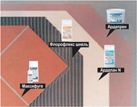
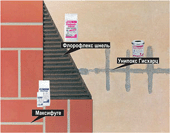
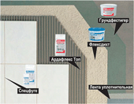
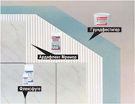
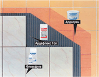
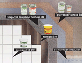

Материалы для укладки плитки
Гидроизоляция: "Жидкая плёнка" Флексдихт – ванны, души, сырые помещенияУкладка природного камня на стенах и полах
Выравнивание основания и укладка напольной плитки |
|
| 1. Подготовка основания средствами Ардапрен или Грундфестигер. 2. Выравнивание нивелирной массой Ардалан N (при толщине слоя больше 10 мм и до 30 мм использовать дополнительно кварцевый песок 0-4,0 мм) 3. Приклеить плитку клеем Флорфлекс, Ардафлекс, Ардалит Про или Флексмортель. 4. Заделать швы затирками Максифуге или Флексфуге. |
 |
Эпоксидная заливочная масса Унипокс Гисхарц - ремонт стяжки. Укладка напольной плитки |
|
| 1. Трещины, ложные швы и т.п. на поверхности пола расширить, и укрепить металлическими штырями. 2. Нанести заливочную смолу Унипокс Гисхарц и обсыпать кварцевым песком 0,6-1,2 мм. 3. Приклеить плитку клеем Флорфлекс, Ардафлекс, Ардалит Про или Флексмортель. 4. Заделать швы затирками Максифуге или Флексфуге |
 |
| 1. Грунтовка впитывающих оснований средством Грундфестигер. 2. Двухслойное нанесение валиком “жидкой плёнки“ Флексдихт для гидроизоляции (используются дополнительно: Уплотнительная лента Ардал, Специальная уплотнительная лента Ардал, Внутренние и Внешние углы, Уплотнительные манжеты Пол и Стена, Стеклоткань). 3. Приклеивание плитки клеем Ардафлекс, Флорфлекс, Aрдалит Про + Эласто 80 4. Заделка швов подходящей затиркой Ардал |
 |
| 1. Грунтовать впитывающие основания (напр. гипсовую штукатурку) средством Грундфестигер. 2. Приклеить плитку клеем Ардафлекс Мрамор или Среднеслойным клеем Мрамор. 3. Заделать швы подходящей затиркой Ардал. |
 |
Укладка плитки по старому керамическому покрытию |
|
| 1. Очистить старое плиточное покрытие. 2. Нанести валиком неопреновое грунтовочное средство Ардапрен. 3. После полного просыхания грунтовки приклеить плитку высокоэластичным тонкослойным клеевым раствором Ардафлекс Топ. 4. Заделать швы подходящей затиркой Ардал. |
 |
Помещения с агрессивной химической средой |
|
| 1. Основание должно быть прочным, практически сухим, без загрязнений и разделительных слоёв. 2. Вклеить Уплотнительную ленту Ардал в свеженанесённый слой Ардалон 2К Плюс для герметизации деформационных швов между стенами и полом. Заделать в области стоков Манжеты Пол / Стена и Стекловолокно Ардал. 3. Приклеить плитку клеевым раствором Ардафлекс Топ. 4. Заделать швы подходящей затиркой Ардал. |
 |
1. Подготовка основания средствами Ардапрен или Грундфестигер.
2. Выравнивание нивелирной массой Ардалан N (при толщине слоя больше 10 мм и до 30 мм использовать дополнительно кварцевый песок 0-4,0 мм)
3. Приклеить плитку клеем Флорфлекс, Ардафлекс, Ардалит Про или Флексмортель.
4. Заделать швы затирками Максифуге или Флексфуге.
2. Выравнивание нивелирной массой Ардалан N (при толщине слоя больше 10 мм и до 30 мм использовать дополнительно кварцевый песок 0-4,0 мм)
3. Приклеить плитку клеем Флорфлекс, Ардафлекс, Ардалит Про или Флексмортель.
4. Заделать швы затирками Максифуге или Флексфуге.
 Грундфестигер
Грундфестигер  Клей Ардал 902
Клей Ардал 902